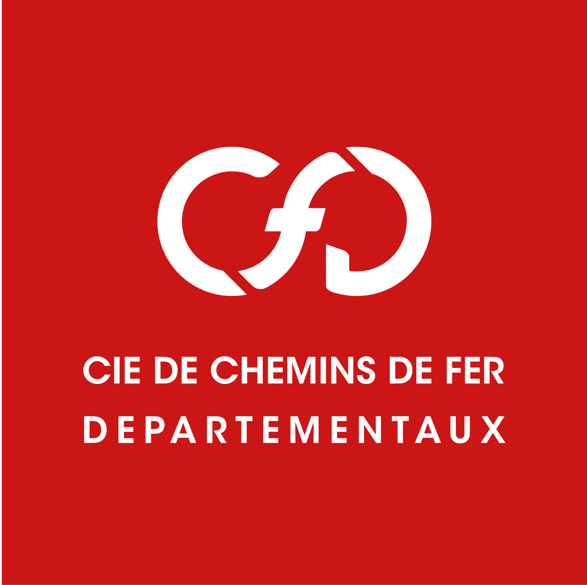
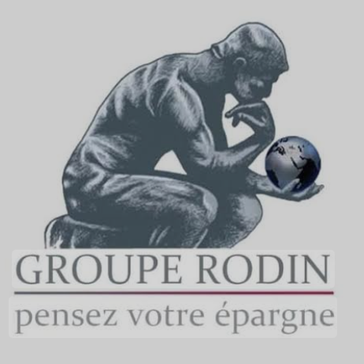

Expériences

Orange
2025
AI Experimentation Officer (Stage)
Développé un prototype IA pour CRM en générant automatiquement des e-mails et SMS avec LLM.

Compagnie de Chemin de Fer Départementaux (CFD)
2023
Assistant Chef de Projet Digital (Stage)
Optimisé le SEO d'Infflux (Semrush, Majestic), mené des analyses concurrentielles, rédigé du contenu web et réalisé des benchmarks digitaux.

Groupe Rodin
2022
Assistant Gestionnaire de Patrimoine (Stage)
Prospecté par phoning, assuré le suivi client via CRM et soutenu la présentation de solutions d'assurance.